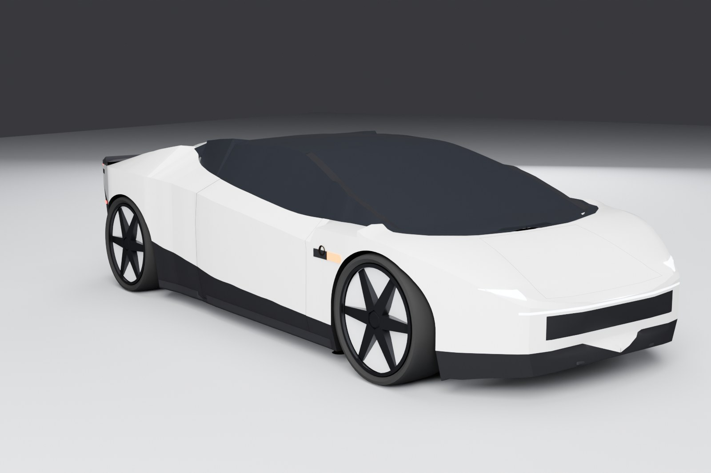

Take a
different route.
A one-metre-wide electric car. A hypercar that leaves the street behind. Two original add-on vehicles for Grand Theft Auto IV: The Complete Edition.
Free downloads · Original models · Stock cars stay in place
Meet the cars.

Tandem T6
A tiny electric car with two seats, one behind the other. Slip into Liberty City's smallest spaces with a completely original add-on model.

Roadster X
Jump over traffic. Hold a hover. Flip, spin and find a new way down. Ten thrusters, an active wing and soft landing assistance turn the city into a playground.
The two car images above are original model renders. Roadster X's gallery also includes an in-game night shot.
A few minutes in the garage.
- 01
Check your edition
You need GTA IV: The Complete Edition 1.2.0.59. Check your game version.
- 02
Follow the install guide
Back up your game, install the listed dependencies, then merge the car's files and data lines. Each ZIP includes a README.
- 03
Spawn it. Drive it.
Your trainer spawns
tandemt6orroadsterx. The mod pages have controls, known issues and changelogs.
Current testing is on GTA IV CE through CrossOver on Apple Silicon. Windows feedback is welcome; see each car's known issues.
Bring your screenshots.
Find your pit crew.
Share a build, post a clip, ask for installation help or report an issue. Choose your car roles and opt into release updates.